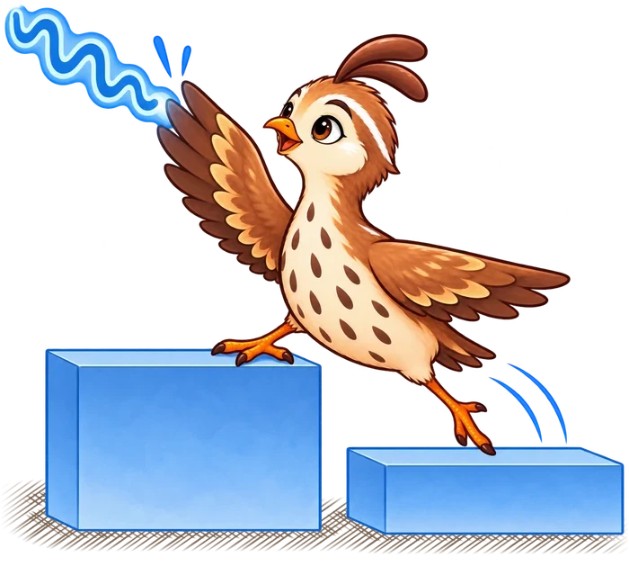

Excited states and spectra
When light is absorbed, an electron moves to a higher orbital faster than the nuclei can move. So the transition is vertical, and a band in the spectrum is not one line but a set of vibrational transitions. Here you can see where the band shape and the Stokes shift come from, how a singlet differs from a triplet, and how to turn calculated excitation energies and oscillator strengths into a spectrum.
What to understand
- An electronic transition is faster than nuclear motion: it is vertical (the Franck–Condon principle), and the intensities of the vibrational lines are set by the overlap of vibrational wavefunctions.
- The shift of the equilibrium geometry in the excited state (the Huang–Rhys factor S) determines the band shape and the Stokes shift 2Sħω.
- A calculation gives vertical excitation energies and oscillator strengths; they should be compared with the band maximum, not with the 0–0 transition.
- The singlet and triplet of one configuration are split by 2K; transitions between them are spin-forbidden.
Model limits: displaced harmonic oscillators
- What is computed
- The shape of the vibronic absorption and emission band, the Stokes shift, the singlet–triplet splitting; a spectrum from calculated energies and oscillator strengths.
- Which approximations are made
- One vibrational mode with the same frequency in both states; only a shift of the equilibrium; absorption from the v = 0 level (low temperature); Gaussian broadening of the same width.
- What can be concluded
- Why bands are broad, where progressions and the Stokes shift come from, how to compare a calculation with experiment — yes; the exact shape of a real spectrum — no.
Franck–Condon principle
Singlet and triplet
An excited configuration with two unpaired electrons gives a singlet and a triplet. With the same orbitals their energies differ by 2K, where K is the exchange integral of the two orbitals (see the “Pauli principle” page). The S₀ → T₁ transition is spin-forbidden, so the triplet is populated mainly by intersystem crossing from S₁, and its emission — phosphorescence — is slow.
Spectrum from an output file
Programs (TDDFT, CIS, ADC, EOM-CC) print vertical excitation energies and oscillator strengths f. Enter them as “energy f” pairs — one line per transition; the energy in eV or nm. Each line gets a Gaussian shape of the given width. The box contains a made-up example.
Check your knowledge
Exercises on the page: do the action on the page and choose an answer — it is checked right away.
Set S = 0. What do the absorption and emission spectra look like, and why?
S = 2.5: which vibrational transition 0 → v is the most intense in absorption?
v of the most intense transition
S = 1, ħω = 1500 cm⁻¹: what is the Stokes shift between the absorption and emission maxima?
Stokes shift, cm⁻¹
Why does the fluorescence spectrum look like a mirror image of the absorption spectrum?
S₁ is at 3.0 eV, the exchange integral K = 0.5 eV. Where is T₁, and at what wavelength will phosphorescence appear?
Phosphorescence wavelength, nm
“Spectrum from an output file” section: in the made-up example the lowest transition is 4.20 eV (295 nm). Is it visible as a maximum of the envelope?